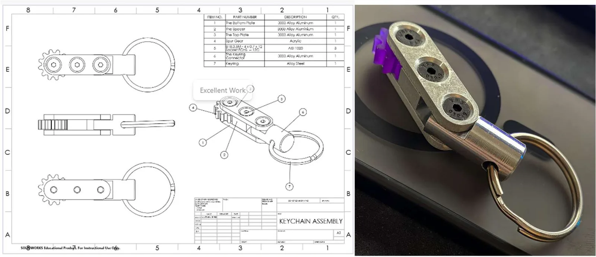

Machined keychain assembly
A multi-part keychain assembly taken from SOLIDWORKS model and drawing to finished machined part.
- Context
- Engineering student machine shop
- Timeframe
- 2025–2026
- Materials
- Aluminum plates and spacer, acrylic spur gear
- Tools
- SOLIDWORKS, lathe, mill, drill press, bandsaw
Overview
I designed a multi-part keychain made of aluminum plates and a spacer with an acrylic spur gear, produced the SOLIDWORKS assembly and a 2D engineering drawing with a bill of materials, and machined the parts in the student machine shop.


Process
The drawing defines each part and how they fit together, and the parts were made with the machine shop's conventional equipment: lathe, mill, drill press and bandsaw.
Which operations you used on which parts, any tolerances you had to hold, and what you would change.